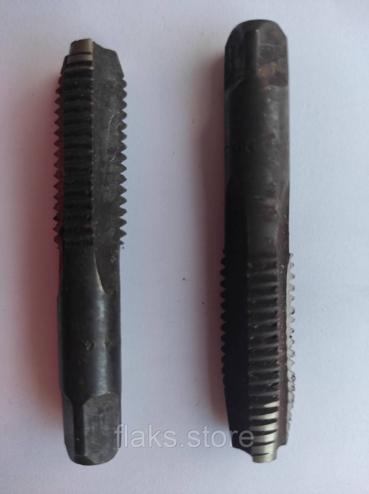

Мітчики G(Тр),К,RC(Ктр)Метчики G(Тр),К,RC(Ктр)
Мітчик ручний 9/16 дюйма 12 ниток на дюйм 55 гр. комплект із 2-х штукМетчик ручной 9/16 дюйма 12 ниток на дюйм 55 гр. комплект из 2-х штук
ОписОписание
Мітчик ручний 9/16 дюйма 12 ниток на дюйм 55 гр. комплект із 2-х штук — професійний металорізальний інструмент для нарізання внутрішньої метричної різьби в отворах. В наявності 6 шт. на складі у Харкові. Ціна 450 грн без ПДВ. Опт і роздріб, відправлення по всій Україні. Замовлення від 2 000 грн. Уточнюйте наявність, аналоги та технічні характеристики за телефоном або e-mail — допоможемо підібрати інструмент під вашу операцію.Метчик ручной 9/16 дюйма 12 ниток на дюйм 55 гр. комплект из 2-х штук — профессиональный металлорежущий инструмент для нарезания внутренней метрической резьбы в отверстиях. В наличии 6 шт. на складе в Харькове. Цена 450 грн без НДС. Опт и розница, отправка по всей Украине. Заказ от 2 000 грн. Уточняйте наличие, аналоги и технические характеристики по телефону или e-mail — поможем подобрать инструмент под вашу операцию.
ХарактеристикиХарактеристики
| Тип інструментуТип инструмента | МітчикМетчик |
|---|---|
| КатегоріяКатегория | Мітчики G(Тр),К,RC(Ктр)Метчики G(Тр),К,RC(Ктр) |
| Ниток на дюймНиток на дюйм | 1212 |
| СтанСостояние | новийновый |
| Код товаруКод товара | FLK-02277FLK-02277 |
| НаявністьНаличие | 6 шт.6 шт. |